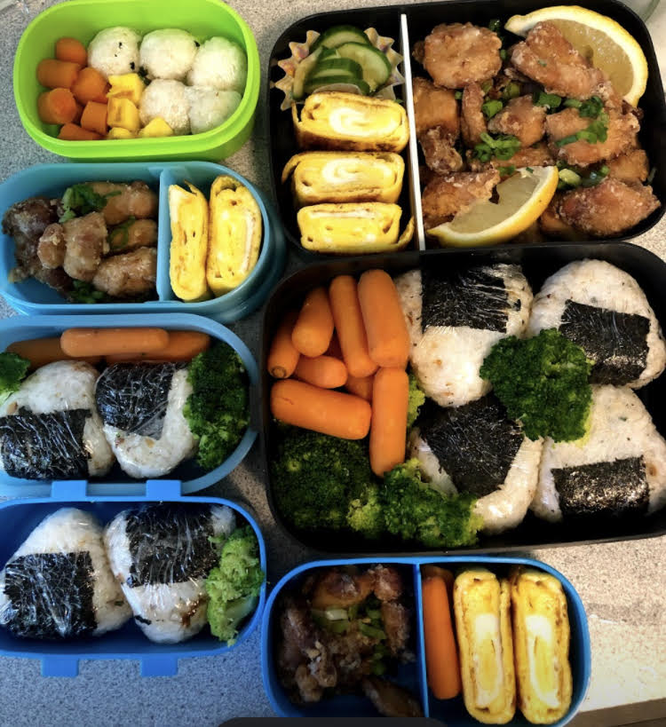

Kara age

Description
Japanese fried chicken marinated in soysauce, garlic, ginger, and egg.
Great for bentos. My kids love this recipe. Keeps well in freezer.
Ingredients
- 2 pounds chicken (dark meat).
- 1/2 tsp salt
- 1/4 tsp pepper
- Potato starch for coating
- Oil for frying
- 1 knob ginger
- 5 cloves garlic
- 1 egg
- 1 cup soy sauce
- Green onion and lemon as garnich
Steps
-
Cut chicken into bite sized peices.
-
Place chicken in a bowl and marinate with salt, pepper, soy sauce, egg, grated ginger and garlic.
-
Massage meat into mixture with hands and let it marinate overnight.
-
Dip chicken peices in potato starch and deep fry.
-
Garnish with a slice of lemon and green onion.